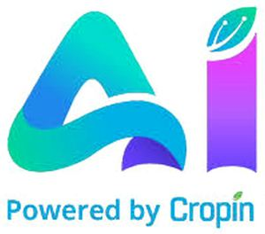

Trade Mark Journal No.2025/009 28 February 2025
WO0000001824381 (9,42)
Office of origin: India
Date of International Registration:26 September 2023
Date of designation in the UK:
26 September 2023

Stylized alphabets "ai": alphabet 'i' having the dot in the form of a leaf: below- "Powered by Cropin" is written.
- Class 9
- Computer software; computer programs [downloadable software]; computer software applications, downloadable; mobile application, software to streamline data from devices; downloadable geographic information system (gis) software; downloadable software for agricultural predictive insights; downloadable application for agri lending and insurance; downloadable software for agri input companies; computer software related to agriculture; artificial intelligence software for farm management, agriculture ecosystem, crop science technology, sector lending and risk management; digital solution provider software for farmers, filed agents, supervisors, managers in the field of agriculture; computer software for transmission, storage and indexing of agricultural data and to capture farm operations.
- Class 42
- Design and development of computer software; computer software design; computer software consultancy; rental of computer software; software as a service [saas]; updating of computer software; updating of computer software; cloud computing in agriculture; leasing of software for inventory management; programming of software for inventory management; rental of software for inventory management; providing on-line downloadable geographic information system (gis) software; providing online software services for: agricultural predictive insights, agri lending and insurances and for agri input companies; computer software related to agriculture, agriculture ecosystem, crop science technology, sector lending and risk management.
CROPIN TECHNOLOGY SOLUTIONS PRIVATE LTD.
Representative: Ankush Bedi, Smartworks Corporate Park,, Amity Rd, Sector 125,, Noida 201303, Uttar Pradesh, INDIA